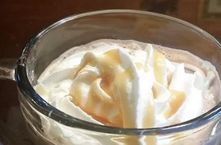

Creamy Hot Cocoa Recipe

Description
It's old fashioned, it's comforting, it makes the kitchen smell wonderful and it's good for the soul.
- ⅓ cup unsweetened cocoa powder
- ¾ cup white sugar
- 1 pinch salt
- 3 ½ cups milk
- ¾ teaspoon vanilla extract
- ½ cup half-and-half cream
- Combine the cocoa, sugar and pinch of salt in a saucepan. Blend in the boiling water. Bring this mixture to an easy boil while you stir. Simmer and stir for about 2 minutes. Watch that it doesn't scorch. Stir in 3 1/2 cups of milk and heat until very hot, but do not boil! Remove from heat and add vanilla. Divide between 4 mugs. Add the cream to the mugs of cocoa to cool it to drinking temperature.